- 00000018WIA30E91130GYZ
- id_152710764.11
- Jul 1, 2025 6:31:54 PM
PET Daily Quality Assurance (DQA) check
Select the software version for which you want to do a PET Daily Quality Assurance (DQA) check.
| Personnel requirements | |||
|---|---|---|---|
| Required persons | Preliminary requirements | Procedure | Finalization |
| 1 | - | 30 minutes | - |
| Tools and test equipment | |||
|---|---|---|---|
| Item | Quantity | Part number | Manufacturer |
| PET/MR Annulus Phantom Note Contains germanium-68 (Ge-68). | 1 | E8008PN | Eckert & Ziegler |
| PET/MR Annulus Phantom Holder | 1 | 5458479 | - |
| Required conditions |
|---|
| Remove the patient pads from the bore. Failure to remove the patient pads from the bore before running DQA may cause the test to fail. |
| Install the CMA coil. Failure to install the CMA coil before running DQA may damage the LPCA. |
| If the annulus phantom is older that 2 years, have the customer order a new one. Customers must order all radioactive phantoms. |
| Safety | ||||
|---|---|---|---|---|
|
Before working in any GE HealthCare MR suite or doing any GE HealthCare service procedure, you must:
If you have any safety concerns at any time, do not begin work or immediately stop work and move to a safe location. Immediately contact your supervisor or site safety officer for instructions on how to proceed. | ||||
| ||||
PET DQA scan procedure
The DQA program measures the current state of the PET detector and provides a visual and a parametric data report that can used for quality assurance. DQA test descriptions (calibrations and calculations) provides a list of DQA tests and calculations.
Synchronization of the scanner, dose calibrator, and facility clocks is recommended to support quantitative precision. Use of a network time server is the best method for synchronizing your system time, if available. As part of the installation process, the Field Engineer creates a baseline reading for the system. Each later DQA compares itself to this baseline. You have the responsibility to set a new baseline reading after running the quarterly calibrations.
| Notice | |
|---|---|
- Remove all phantoms from the table and clear the room of radioactive sources. Note Never run a DQA scan with a person in the scan room.
- From the header area of the screen, click the Tools arrow and select PET Daily QA.
- From the PET DQA screen, click Take Current Reading. A message provides instructions on the position of the PET Annulus Phantom.
Figure 1. PET annulus phantom instructional message 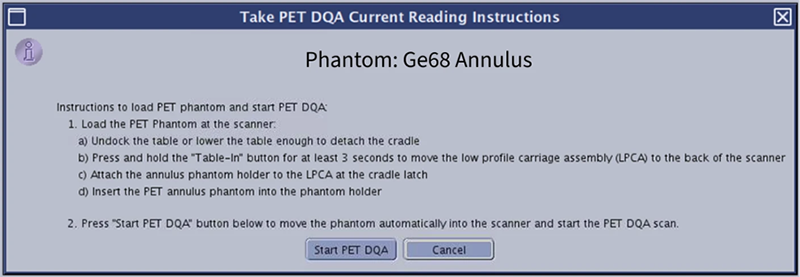
- Load the PET/MR annulus phantom at the scanner.
- Undock the table or lower the table sufficiently to disconnect the cradle.
- Press and hold Table-In for 3 to 5 seconds to move the LPCA to the back of the scanner.
- Attach the Annulus Phantom holder to the LPCA at the cradle latch.
- Insert the PET Annulus Phantom into the phantom holder.
Figure 2. PET annulus phantom positioned in phantom holder 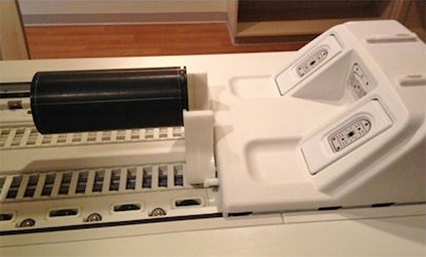
- Click Start PET DQA.
- The phantom automatically moves into the scanner to start the PET DQA scan.
- While the DQA is acquired, the time synchronization for the scanner and facility clocks can be checked.
- When the DQA scan is complete, the screen defaults to the View Summary mode, which shows a table of pass/fail information called the Report for Current Reading. There may also be a message below the pass/fail table that indicates a timing offset was detected and requires attention. If the table shows a failure, DO NOT SCAN patients until you resolve the issue.
- “Good” DQA View Summary screen with all tests passing shows an example of a Good View Summary and “Bad” DQA View Summary screen with some test failures shows an example of a View Summary with failures.Note PET can only do one task (Calibration, DQA, or Scan) at a time. You must close all other open PET processes to start a new one.
Figure 3. DQA status tracking for PET/MR annulus phantom 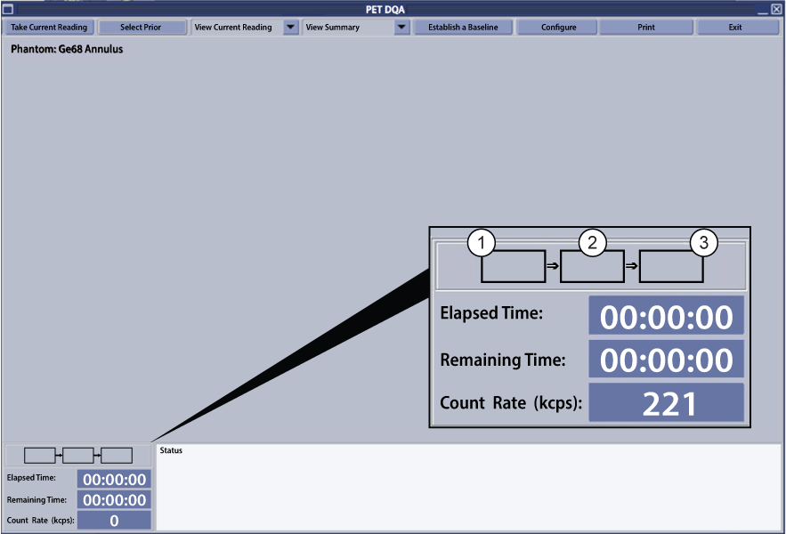
1 Energy Acquisition (50M) 2 Phantom Position Acquisition (75M) 3 Timing (Unlist) - Optional: Click the .
- The display changes to a graph for Current Reading panel that provides a graphic display of each DQA test compared to its baseline. It includes tables of values and red/yellow/green indicators with the statuses that follow:
- Green: the value is in an permitted range of variation from the baseline reading.
- Yellow: the system shows increased variation from the baseline reading, but you can use the system when the graph of the related test is defect-free.
- Red: the value falls outside the range of permitted variation from the baseline reading. Review for corrective action (such as calibration or repair.)
- “Good” DQA View Data screen with all green passing status shows an example of a good DQA in View Data mode and "Bad" DQA View Summary screen with timing offset detected software version 30 and later shows an example of a DQA scan with failures.
- The display changes to a graph for Current Reading panel that provides a graphic display of each DQA test compared to its baseline. It includes tables of values and red/yellow/green indicators with the statuses that follow:
- Optional: Click Print to create a hard copy of the currently displayed screen.
- Click Exit.
- To remove the PET/MR annulus phantom, press and hold Table-In for 3 to 5 seconds. This moves the LPCA to the back of the scanner to remove the phantom and holder.Note Make sure the dose calibrator clock and the scanner clock are synchronized. Make sure that the system date and time are correct. A time difference of only 2 minutes introduces a gain of more than one percent in the measured SUV.Note Use the steps in Saving Information to archive a backup set of PET calibration and PET DQA files once every week. See Saving information. If necessary, these backup files can be used to restore the system to normal operation upon completion of system service or a software load from cold.
Figure 4. “Good” DQA View Summary screen with all tests passing 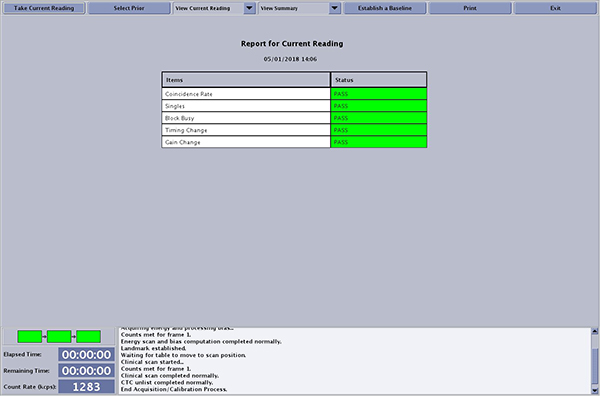
Figure 5. “Bad” DQA View Summary screen with some test failures 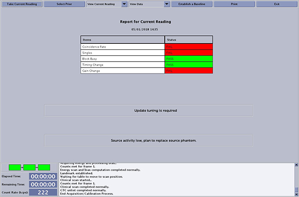
Figure 6. "Bad" DQA View Summary screen with timing offset detected (For software version 30 and later) 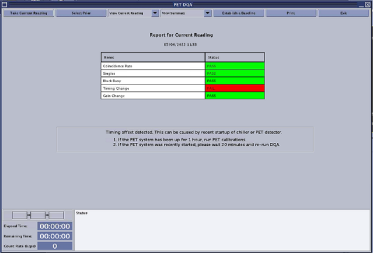
Figure 7. “Good” DQA View Data screen with all green passing status 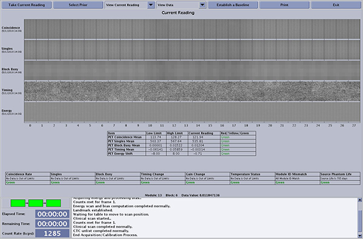
Figure 8. “Bad” DQA View Data screen with red status failures 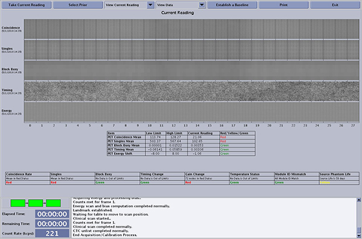
DQA failures and summary messages procedure
If one or more DQA tests fail, the system lists recommended actions beneath the summary report table. This section lists the messages the system can show and the recommended actions to correct the failure.
- Check to see if the related test (calibration) falls outside the range of permitted values.
- Yellow = update tuning is recommended
- Red = update tuning is required
- Check to see if the temperature falls outside the specified range.
- Yellow = configuration is outside the normal range. Check the room temperature and status.
- Red = defect is detected in the configuration. Service attention is required.
- Check to see if the PET Annulus phantom source (transmission source) activity falls below permitted levels.
- Yellow = the source activity is low. Plan to replace phantom.
- Red = the source activity is below minimum activity. Replace the phantom.
Table 1. DQA test descriptions (calibrations and calculations) Calibration Calculation Coincidence Shows the number of coincidence events related with each crystal element. Coincidence directly relates to sensitivity during patient acquisitions. Note Any difference in Coincidence and Singles for modules 11 through 18 is due to table attenuation.PET coincidence mean The average of the coincidences for all crystals. This calibration shows overall changes over time, but is not sensitive to individual crystals or block defects. Singles Shows the number of individual events detected in each crystal, but defects in timing will not show in this stripe. Note Any difference in Coincidence and Singles for modules 11 through 18 is due to table attenuation.PET singles mean The average of singles for all crystals. Deadtime Shows the fraction of time that each detector block is busy. A high value may indicate noisy electronics or a light leak in the detector. A zero value indicates a loss of signal which should match low values in singles and coincidence. PET mean Block Busy mean The average Block busy of all blocks. Timing (For software version 30 and later) Shows the calculated timing error for each crystal. Large area patterns may indicate a defect and point to the suspected component. Pronounced shading difference between left and right sides may be seen if PET system or chiller was recently started or PET Timing Calibration (CTC) is needed. A normal pattern shows random values in the range of minus one to plus one.
(For software version 26) Displays the calculated timing error for each crystal. Large area patterns may indicate a defect and point to the suspected component. A normal pattern displays random values in the range of minus one to plus one.
PET Timing mean The average timing adjustment of all crystals. Energy Shows the peak energy spectrum of all crystals. PET Energy shift The average difference in energy peak location of the current reading from the baseline reading. Changes in room temperature strongly influence the PET energy shift. If the intended operating temperature has changed, please run an Update Gain to remove this shift. The bottom row of calibration checks on the DQA “View Data” screen contains the individual checks on the module, block or crystal levels, and the corresponding Red/Yellow/Green status. Each module, block, or channel must fall within the permitted range of values in order to display the “Green” status.
Table 2. Individual checks Check Description Coincidence rate Checks the coincidence rate of all individual modules and blocks. Singles rate Measures the singles events (not coincidence) rate detected in each block and crystal. Busy Block Measures the percent of time that the PET block is processing events. Timing changes Reflects changes in coincidence timing per block. Gain changes Detects the changes in gain at the block level, at each channel per block and the average gain change of all channels per block. Temperature status Verifies the temperature sensors in the PET/MR bore fall within the permitted range. Module ID match Compares the actual module ID numbers against the list of Module IDs currently stored in the system. (FE check) Source phantom life Shows the number of days remaining until time to replace the radioactive PET Annulus phantom source used during DQA and calibrations, such as Normalization. The messages that follow can show on the DQA summary page.
Table 3. DQA messages Error condition PET detector SRM color Message DQA: Unit Fault 1-10 Yellow (For software version 26 and 30.0) Possible PET Detector Problem Identified; Reconstruction algorithm will compensate. OK to scan normally. Do not recalibrate.
(For software version 30.1 and later) Possible PET Detector Problem Identified; Reconstruction algorithm will compensate. OK to scan normally. Contact GE Service.
DQA: Unit fault > 10 or PET Detectors out of calibration with unit faults Red PET Detector error has occurred. Do not recalibrate. Contact GE service. DQA: Timing offset detected Not affected (For software version 30 and later) Timing offset detected. This can be caused by recent startup of chiller or PET detector.- If the PET system has been up for 1 hour, run PET calibrations.
- If the PET system was recently started, please wait 20 minutes and re-run DQA.
You are allowed to continue using the system with failure of up to 10 PET detector units. The system compensates for the failed units until service can be performed. GE service should be contacted immediately.Figure 9. (For software version 30.0) DQA Status – PASS with the number of bad units less than or equal to 10 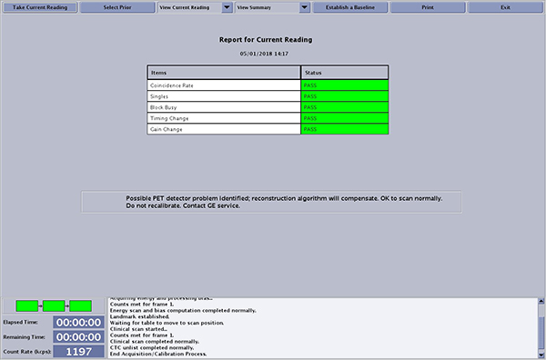
Figure 10. (For software version 30.1) DQA Status – PASS with the number of bad units less than or equal to 10 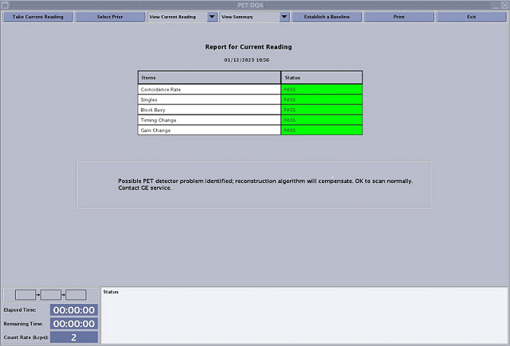
Figure 11. DQA Status – FAIL with the number of bad units over 10 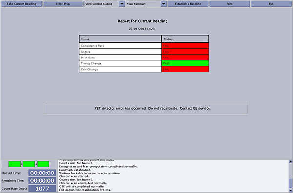